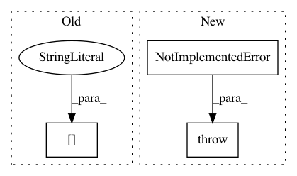

fff2b2fcaad05ad7fd020e3cf96a8edd49d62084,arviz/wrappers/base.py,SamplingWrapper,log_likelihood__i,#SamplingWrapper#,135
Before Change
stored in ``idata__i``.
ndraws = idata__i.posterior.dims["draw"]
nchains = idata__i.posterior.dims["chain"]
log_like_idx = _wrap_xarray_ufunc(
lambda pars: self.point_log_likelihood(excluded_obs, pars),
idata__i.posterior.to_array(),
func_kwargs={"out": np.empty((nchains, ndraws))},
After Change
stored in ``idata__i``.
if self.log_lik_fun is None:
raise NotImplementedError(
"When `log_like_fun` is not set during class initialization "
"log_likelihood__i method must be overwritten"
)
posterior = idata__i.posterior
arys = (*excluded_obs, *[posterior[var_name] for var_name in self.posterior_vars])
if self.is_ufunc:
ufunc_applier = apply_ufunc
In pattern: SUPERPATTERN
Frequency: 4
Non-data size: 3
Instances
Project Name: arviz-devs/arviz
Commit Name: fff2b2fcaad05ad7fd020e3cf96a8edd49d62084
Time: 2021-01-13
Author: oriol.abril.pla@gmail.com
File Name: arviz/wrappers/base.py
Class Name: SamplingWrapper
Method Name: log_likelihood__i
Project Name: snorkel-team/snorkel
Commit Name: b56a4b355dfc302fa449d223e065af3a7acac986
Time: 2018-05-03
Author: dnicholson329@gmail.com
File Name: snorkel/learning/pytorch/noise_aware_model.py
Class Name: TorchNoiseAwareModel
Method Name: marginals
Project Name: xinntao/BasicSR
Commit Name: 474ed3789d19fd1bdf40a7365a5d196e118132c0
Time: 2018-09-09
Author: wxt1994@126.com
File Name: codes/models/networks.py
Class Name:
Method Name: define_D
Project Name: ellisdg/3DUnetCNN
Commit Name: 7193e19838da4c566c9724ded7a8c37ed7f4fc68
Time: 2017-04-03
Author: david.ellis@unmc.edu
File Name: DataGenerator.py
Class Name:
Method Name: data_generator